Welcome
Introduction
"Quality installation of magnificent granite counter tops at affordable prices. Our total commitment is to our customers."
Founded in 2003, GS Granite Cabinet Expo, Inc. is a small-business kitchen and bathroom remodeling company based in Hayward and the surrounding Bay Area. Our in-house crews are all personally trained by our granite experts, and we work together to meet your budget and deadline. No matter how big or small, your job is our number one priority.
We use the latest industry standard software to design your dream kitchen or bathroom. We provide you with a 3D virtual walk-through of your new kitchen or bathroom. Instant feedback is our priority, as we are a small business that can always be reached.
We specialize in granite and cabinet installation but we are also capable of kitchen & bathroom remodeling, natural stone & wood flooring, roofing, and house additions. During our house additions, we can do walling, painting, and moulding. Contact us with your desired job, and we will try our best to fulfill it.
Why GS Granite‽
Granite and marble add beauty and sophistication to any environment. We offer quality craftsmanship, service, and value for your natural stone project. Our fully equipped fabrication shop and trained staff will make your idea or design a reality. We also have a large inventory of stone from all over the world to choose from. Call on our design and estimating staff to help you choose the color and features that best suit your requirements. We guarantee your satisfaction.
what you’ll get
- Come to our showroom and our knowledgeable staff will guide you through the process of picking the perfect granite for you.
- Over 60 styles of granite, marble, and quartz from all over the world and wide varieties of cabinets, sink, tops, tiles, hardwood floors, and many other kitchen and bathroom accessories.
- An in-house measurement and quote free of charge.
- An advanced 3D virtual walkthrough and final blueprints.
- As work begins, we realize that you, the customer, has a schedule as well. We are flexible and are also willing to listen to your input, suggestions, and modification so we can make your dream project become a reality.
- A lifetime warranty against fabrication or installation defects, for as long as we are in business.
Services
What we do
- Kitchen and bathroom remodeling
- Cabinet installation
- Floor installation
- Roof installation
- House additions
- Painting
- Moulding
What we sell
- Granite surfaces, and tiles
- Marble surfaces, and tiles
- Wooden cabinets and floors
- Stainless steel kitchen faucets
- Glaze n’ Seal granite sealant
Our partners can supply
- Kitchen and bathroom sinks
- Stove hoods
Show me the granite
Baltic Brown
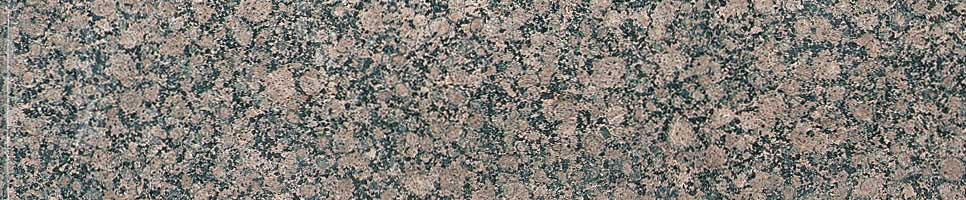 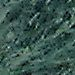
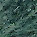
 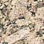
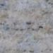
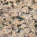
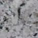
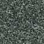
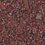
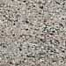
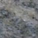
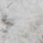
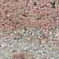
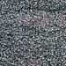
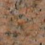
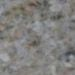
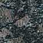
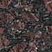
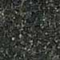
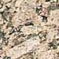
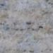
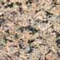
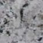
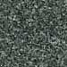
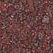
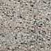
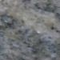
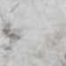
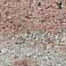
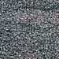
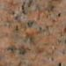
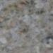
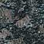
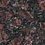
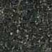
We directly import our natural stones from around the world. We will try to match this page with the current inventory in our showrooms, but please call us ahead of time for a quote or inventory check.
information
We stock the following sizes:
- 96”-118” x 26” standard
- 96”-118” x 36” peninsula
- 96”-118” x 42” peninsula
All of our slabs have a 1.5 inch industry standard rounded bullnose on the front (Bullnoses are the rounded edges of counters). Depending on installation location, your slab may have a left, and/or right bullnose.
disclaimer
Quarried natural stone by nature have conditions that cannot be controlled (e.g. color, size, veining, fissures, thickness, etc).
As a consumer/contractor, you may not understand some of the conditions inherent in natural stone. As a result, we must have a signed disclaimer attached to all selections requesting any natural stone products, to avoid future problems or misunderstandings.
Granite, marble, limestone, travertine and any quarried products we carry have been cut from carefully selected stone blocks produced by Mother Earth.
As a natural stone product, please understand that some stones may contain naturally occurring imperfections, which are characteristic to the individual stone. These characteristics include: color and shade variations, geological flaws, irregular markings, voids, veins, fissures, cracks, lines and/or minor separations.
It is a standard practice by the manufacturer or fabricator to repair these separations by one or more of the following methods: waxing, filing. All of these variations and characteristics are common and present to some degree.
When granite or marble is installed, the various sections will be joined together with seams. Seams are small but might be visible, and are typically filled with a color-coordinated polyester adhesive or epoxy to minimize their appearance. The location and quantity of seams are determined by the fabricator according to slab sizes, sink and cook-top cutouts, project design and jobsite access. A typical job will have 2-3 seams. They are commonly located in the center of cutouts like sinks and cooktops, at inside corners running the depth of the countertop, and in backsplashes at any height or elevation change.
To polish or not to polish seams, that is the question. Customers will typically have the option to choose. An unpolished seam will feel rough, but the texture of the seam will be like the rest of the counter. A polished seam is smooth, but when viewed from side angles will most likely be a different color compared to the rest of the surface. Customers must select and acknowledge which option they prefer. If the appearances of seams are a concern, please see our showrooms for a demonstration.
No stone product will be purchased or installed without a signed disclaimer from the homeowner or the builder representative, accompanied by the appropriate color selection.
It is hereby understood that GS Granite Cabinet Expo Inc. will not be held responsible for the natural conditions of the stone products as described herein.
The Process
After getting an idea of what you want, come on over to our showroom! You will be able to get a closer view and talk with our knowledgeable staff, or check out the other remodeling services we offer.
After the free in-house measurements and price quotes, we will discuss our work schedule and predicted cost, and show our predicted 3D models. We are always open to input from the customer, and the time of the project varies with your selection. A countertop installation normally takes less than a week, but a full kitchen remodel with countertops and cabinets can take anywhere from 2 weeks to a month. Please inform us if you have time constraints.
Here are some examples of the 3D walkthroughs we create for you, with the kitchen and bath design software, 20-20.
After Installation
In order to keep your stone countertop in top condition, here are a few basic tips (but you can always ask us for more).
preventing damage
Granite is very durable. If it can survive the fabrication process without damage, it is very difficult to break it. To avoid having problems with your stone material, be sure to follow the guidelines here to prevent any permanent damage.
- Avoid prolonged exposure of your granite surface to strong chemicals, such as paint removers, oven cleaners, acids, and oil. If contact occurs, quickly wipe or absorb with a towel.
- Do not cut directly on your stone countertop. This can cause deep and permanent scratches to appear. Instead cut on a cutting board that is placed on top of the stone.
- To prevent staining, we recommend that you re-seal your countertops every 9 months to a year.
- Avoid directly dropping heavy or sharp objects on your countertops.
cleaning and sealing
Your stone countertops are very easy to clean. Common household products will keep your stone looking beautiful for a long time.
Recommended Cleaners and Sealers
- Hot, soapy water
- Any water-based sealant (we personally use Glaze ‘N Seal, and carry it in our store)
warranty
GS Granite Cabinet Expo Inc. warranties its granite or marble installation against failure due to fabrication or installation defects for the time we are in business. This warranty applies to products permanently installed by GS Granite Cabinet Expo Inc, which have been properly maintained according to GS Granite Cabinet Expo Inc. procedures. This warranty does not cover:
- Damage or defect due to material failure. Natural stone is imperfect by nature and cannot be warranted as such.
- Damage caused by failure to follow maintenance procedures.
- Damage due to chemical or physical abuse.
- Damage caused by fire, flood, earthquake, house settling or other natural disaster.
- Regular maintenance such as sealing, stain removal or re-caulking around sinks.
FAQ
1. What is granite?
Granite is volcanic (or igneous) rock. When molten material from the Earth's core, called "magma", comes up to just beneath the Earth's surface and solidifies under tremendous pressure, it becomes granite. Granite is very hard and extremely durable. It has a granular structure and consists mostly of quartz and feldspars accompanied by one or more dark minerals.
2. What can granite be use for?
Due to granite's high density, low absorption rate, scratches, heat and acid resistance, granite can be used for a wide range of applications, including flooring, fireplaces, furniture and countertops. One of the leading uses of granite is for kitchen countertops. With many beautiful colors and patterns available, granite will fit with any kitchen design.
3. Will there be color variations in my granite?
Yes, as with any stone, naturally occurring variations in color and texture should be expected. These variations and contrasts are what gives granite its depth and beauty and set it apart from other man-made products. They can include color and shade variations, geological flaws, irregular markings, voids, veins, fissures and lines of minor separations. In most cases, slabs are cut and bundled consecutively from the same block of stone so as to keep variations as coordinated as possible.
4. Will I see seams in my granite countertops?
Yes, granite is a stone, and because of this, seams cannot be "melted" together. Seams are normally filled with a color-coordinated polyester adhesive or epoxy to minimize their appearance. The location and quantity of seams will depend on slab sizes, sink and cooktop cutouts, project design and jobsite access. If the appearances of seams are a concern, please ask to see a sample of a typical seam.
5. How should I maintain my granite countertops?
You must seal the granite 4 days after the installation. It is recommended you reseal your granite every 9 months to 12 months. Sealant and silk steel wool are available at our showroom. This will help prevent staining from liquids that are spilled on the surface. Avoid prolonged contact with staining agents such as cooking oils, juices, acids, ink, etc. A non-abrasive neutral cleaner, such as soapy water, should be used for normal maintenance. With a little care, granite can give you a lifetime of service.
Contact Us
View Larger Map| Phone | (510) 266-3633 |
| Fax | (510) 266-5999 |
| sales@gsgranite.com |
| Monday - Saturday | 9:00am - 5:30pm |
| Sunday | Closed |
| Holidays | Call in Advance |